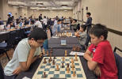
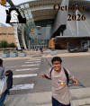
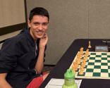
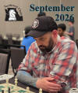

Northwest Chess — Chess News from Washington, Oregon and Idaho
November magazine! The November 2026 issue of Northwest Chess was mailed on Friday, 10/30. It's a 48-page issue with "Washington’s Newest NM! (Rafael Palathingal)" by Josh Sinanan, "Chess-Time Continuum" by The Chess Friends, "2026 Oregon Open" by Wilson Gibbins, "BC v WA Challenge Match" by Sarang and Siva Sankrithi, Josh Sinanan, "Bellevue Chess Classic (Brilliant Belous Bulldozes)" by Josh Sinanan, "To Blitz or Not to Blitz" by Pi Nouveau, and a back-cover of “Be Prepared” at the 76th Annual Oregon Open by Wilson Gibbins. Cover: GM Aryan Tari by Wilson Gibbins. See the teaser edition (selected pages including all full-page ads).
New NM's Continue! Washington State continues to produce a stream of new NM's! Congratulations to Rafael Palathingal of Bothell, Washington, who recently became Washington State's newest National Master! Rafael achieved a US Chess rating of 2206 as a result of scoring 4 points from 5 games and sharing 2nd place in the Inaugural Poverty Bay Cup, hosted by Des Moines Chess Club, October 3-4, 2026. Rafael scored a huge second round victory against GM Vladimir Belous (2519) and drew against current and former Washington State Champions FM Stephen Willy (2314) and FM Ryan Porter (2241) along the way. See the Poverty Bay Cup rating report. Photos: Rafael at left playing black, and behind the white pieces (photo at right taken by Ani Barua).
October magazine! The October 2026 issue of Northwest Chess was mailed on Friday, 9/25. It's a 32-page issue with "Washington’s Newest NM! (William Summerfield)" by Josh Sinanan, "Reflections of a First-Time US Open Player" by Pi Nouveau, "Vancouver Open" by Josh Sinanan, "Seattle Seafair" by Richard LaVoice, "2026 US Open Recap, Northwest Edition!" by The Chess Friends, and a back-cover photo of Pi Nouveau by Sujoy Chowdhury. Cover: Pi Nouveau by Sujoy Chowdhury. See the teaser edition (selected pages including all full-page ads).
Another new NM! Congratulations to William Summerfield of Mercer Island, Wash., who recently became Washington State's newest National Master! To achieve the title, William strung together a brilliant set of performances in the span of just two weeks playing in local events hosted in the Seattle/Bellevue area! Summerfield gained momentum at the August 15-16 Bellevue Chess Classic, where he finished undefeated with wins against Bayrambeyli (1877), Dhingra (1993) and Lim (2089) in addition to draws against Joseph (2030), Wang (1922) and GM Belous (2536) - Crosstable link. He then continued his amazing streak with two wins and a draw at the August 22 Seattle Chess Club Quads with victories against Palathingal (2172) and Kaelin (2031) and a draw against Joseph (2040) - Crosstable link. To clinch the NM title, William achieved a US Chess rating of 2200 as a result of drawing two games and winning one at the August 29 Grand Knights Saturday Quads with an undefeated 2/3 score - Crosstable link.
September magazine! The September 2026 issue of Northwest Chess was mailed on Monday, 8/31. It's a 32-page issue with "Chess Journalists of America Awards" by Ralph Dubisch, "Our Brightest Chess Hours" by The Chess Friends, "Washington Open (Part Two—the Games!)" by Josh Sinanan (and the players), "2026 Washington Father’s Day Open" by Josh Sinanan, "Waterland City Open" by Matityahu Ben-Ha’av, "Jeff Price, Northwest Chess’ newest Board Member" by Jeffrey Roland, and back-cover photos of "Elke Johnson at the 2026 Father’s Day Open," and Manunthon Atikankhotchasee. Cover: Garrett Reynolds at the Washington Open by Meiling Cheng. See the teaser edition (selected pages including all full-page ads). See old news previously appearing on this page.




Current Chess News
| Event | Date | Location |
|---|---|---|
| SPICE Cup Open | November 4-9 | Hilton, Bellevue, WA |
| Oregon Class Championships | November 7-8 | Lloyd Center DoubleTree Hotel, Portland, OR |
| SPICE Cup Rapid | November 8 | Hilton, Bellevue, WA |
| Seattle CC November Rains (Rds 2-3) | November 13, 20 | Seattle, WA |
| Husky Open | November 14 | Seattle, WA |
| Monroe Thanksgiving Chess Open | November 14 | Evergreen Inn & Suites, Monroe, WA |
| Missoula Turkey Open Chess Weekend | November 20-22 | Missoula, MT |
| 61st American Open Chess Championship | November 23-29 | Hyatt Regency Orange County, Garden Grove, CA |
| Washington Class Championships | November 27-29 | Embassy Suites Seattle North/Lynwood, Lynwood, WA |
| Piper Memorial Asult Swiss at the WA Class Championships | November 28-29 | Lynwood, WA |
| WA State MS/HS Mini-Teams Championship | November 14 | Kamiak HS, Mukilteo, WA |
| St. Anne Celtic Challenge Fall 2026 | November 15 | St. Anne School, Seattle, WA |
| 61st American Open Scholastic Events | Nov 23-29 | Hyatt Regency Orange County, Garden Grove, CA |
| WA Class Woodward Thanksgiving Scholastic | November 27 | Embassy Suites Seattle North/Lynnwood, Lynnwood, WA |